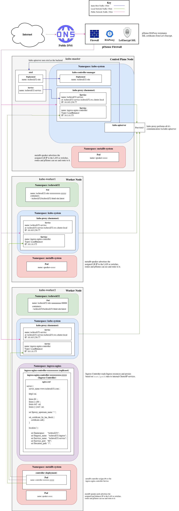

Overview
I designed and built this site from the ground up without relying on a content management system or third-party hosting (though I may mirror it to Google Sites for broader exposure). The site is written in HTML and CSS, with some JavaScript powering interactive elements such as the accordion menu. All images are hosted locally, and the full source code is available on GitHub.
Interestingly, the part I enjoyed most wasn't the UI design — it was building and deploying the site on a Kubernetes cluster in my home lab, applying production-grade engineering practices.
Architecture Diagram(s)

Architecture Explanation
Public Traffic Flow
Client -> Firewall Edge
- Public traffic resolves the DNS name tschrock52.com to my public IP address.
- Once traffic flows into my pfSense firewall on port 443, it hits an HAProxy frontend.
- The HAProxy frontend uses a wildcard certificate from LetsEncrypt to provide secure SSL encryption.
- HAProxy uses a backend tied to this frontend, with custom configuration options defined for routing and SSL handling. HAProxy's Http check version:
HTTP/1.1\r\nHost:\ www.tschrock52.com\r\nAccept:\ */*
http-request set-header Host www.tschrock52.com
MetalLB / kube-proxy / ingress -> Service
- HAProxy’s backend forwards decrypted HTTP traffic to the MetalLB-assigned LoadBalancer IP (10.1.0.x) for the ingress-nginx-controller Service.
- Note: The external IP is assigned by MetalLB's controller pod, enabling ingress-nginx-controller to receive traffic.
- kube-proxy on the node receives traffic for the external Load Balancer IP on a port (say 80 or 443).
- kube-proxy uses iptables/ipvs rules to forward the traffic to one of the ingress-nginx-controller Pods based on the Service definition.
- The ingress-nginx-controller pod processes the HTTP/HTTPS request based on configured Ingress rules.
- The ingress-nginx-controller uses the NGINX web server to process the request and route it to the correct service in the cluster (tschrock52-service).
- Note: The NGINX web server is configured with a custom configMap that sets up a default backend for 404 errors.
Service -> Site Pods -> Client
- The tschrock52-service forwards the request to the correct pod (tschrock52-site-aaaaaaaaaa-bbbbb/tschrock52-site-xxxxxxxxxx-yyyyy).
- The pod processes the request and returns a response to the client.
Code
deployment.yaml
Source: deployment.yaml
apiVersion: apps/v1
kind: Deployment
metadata:
name: tschrock52-site
namespace: tschrock52
spec:
replicas: 2
selector:
matchLabels:
app: tschrock52-site
template:
metadata:
labels:
app: tschrock52-site
spec:
containers:
- name: nginx
image: tschrock52/tschrock52-html-site:latest
imagePullPolicy: Always
ports:
- containerPort: 80
---
apiVersion: v1
kind: Service
metadata:
name: tschrock52-service
namespace: tschrock52
spec:
type: ClusterIP
selector:
app: tschrock52-site
ports:
- port: 80
targetPort: 80
metallb-config.yaml
Source: metallb-config.yaml
apiVersion: metallb.io/v1beta1
kind: IPAddressPool
metadata:
namespace: metallb-system
name: tschrock52-pool
spec:
addresses:
- 10.1.0.175-10.1.0.185
---
apiVersion: metallb.io/v1beta1
kind: L2Advertisement
metadata:
namespace: metallb-system
name: l2-adv
tschrock52-ingress.yaml
Source: tschrock52-ingress.yaml
apiVersion: networking.k8s.io/v1
kind: Ingress
metadata:
name: tschrock52-ingress
namespace: tschrock52
annotations:
nginx.ingress.kubernetes.io/rewrite-target: /
kubernetes.io/ingress.class: nginx
spec:
rules:
- host: www.tschrock52.com
http:
paths:
- path: /
pathType: Prefix
backend:
service:
name: tschrock52-service
port:
number: 80
CI/CD
A full CI/CD pipeline using GitHub Actions or another similar tool wasn't built for this site.
I built a lightweight, local CI/CD pipeline to support rapid and secure iteration with the following goals:
- Integrate with VSCode so my changes could easily be saved and synced to a testing server (I did this with SFTP).
- Automatically build the site image and re-redeploy it to Docker Hub every time I synced changes to the aforementioned testing server.
- Automatically deployed the image to my Kubernetes cluster using the kubectl rollout command.
To do this, I used a couple simple scripts:
- A script named watcher.sh that ran consistently in a cron job on the aforementioned "testing" server.
- Note: This script detects changes any time they occur on the local file system of the testing server using inotifywait
- A script named autobuild.sh that was triggered by watcher.sh every time a change was detected by inotifywait. This script did the following:
- docker build -t tschrock52-html-site /var/www/html
- docker tag tschrock52-html-site tschrock52/tschrock52-html-site
- docker push tschrock52/tschrock52-html-site
- kubectl rollout restart deployment tschrock52-site -n tschrock52
CI/CD - Code
watcher.sh
Source: watcher.sh
#!/bin/bash
# === CONFIG ===
WATCH_DIR="/var/www/html/"
TRIGGER_SCRIPT="/var/www/autobuild.sh"
echo "Watching directory: $WATCH_DIR"
echo "Changes will trigger: $TRIGGER_SCRIPT"
# === Start watching ===
inotifywait -m -r -e modify,create,delete,move "$WATCH_DIR" --format '%w%f' | while read file; do
echo "Detected change: $file"
echo "Running trigger script..."
bash "$TRIGGER_SCRIPT"
done
autobuild.sh
Source: autobuild.sh
#!/bin/bash
cd /var/www/html
docker build -t tschrock52-html-site /var/www/html
docker tag tschrock52-html-site tschrock52/tschrock52-html-site
docker push tschrock52/tschrock52-html-site
sleep 5
kubectl rollout restart deployment tschrock52-site -n tschrock52